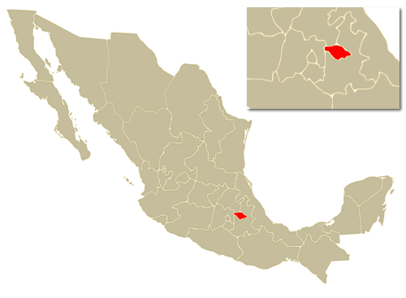

<link rel="import" href="../bower_components/polymer/polymer.html"/><link rel="stylesheet" href="../css/style.css"/><dom-module id="tabla-estado"><template><table cellpadding="1" cellspacing="2" class="normal"><tbody><tr><td colspan="2" align="center" valign="middle" bgcolor="#D0DAEA"><b class="titulo">Estado de Tlaxcala</b></td></tr><tr><td colspan="2" align="center" valign="middle" bgcolor="#D0DAEA"><div align="center"></div></td></tr><tr><td colspan="2" bgcolor="#596E93" style="color:#fff"><b>Municipios:</b></td></tr><tr><td colspan="2" bgcolor="#D0DAEA"><table width="100%" border="0" cellpadding="0" cellspacing="0" class="resto"><tbody><tr><td></td><td><b><a href="">Tlaxcala capital del estado</a></b></td></tr><tr><td></td><td><a href="">Santa Apolonia Teacalco</a></td></tr><tr><td></td><td><a href="">San Juan Huactzinco</a></td></tr><tr><td></td><td><a href="">Lázaro Cárdenas</a></td></tr><tr><td></td><td><a href="">Santa Isabel Xiloxoxtla</a></td></tr><tr><td></td><td><a href="">Santa Cruz Quilehtla</a></td></tr><tr><td></td><td><a href="">Santa Catarina Ayometla</a></td></tr><tr><td></td><td><a href="">Santa Ana Nopalucan</a></td></tr><tr><td></td><td><a href="">San Lucas Tecopilco</a></td></tr><tr><td></td><td><a href="">San Lorenzo Axocomanitla</a></td></tr><tr><td></td><td><a href="">San José Teacalco</a></td></tr><tr><td></td><td><b><a href="">Ver Todos...</a></b></td></tr><tr><td height="1" bgcolor="#B4122D"></td></tr><tr><td bgcolor="#D0DAEA" colspan="2"><fuentes> </fuentes></td><a href="http://www.inegi.gob.mx" title="Instituto Nacional de Estadística Geografía e Informática" class="normal">INEGI<a href="http://es.wikipedia.org" title="Wikipedia" target="_blank" class="normal">Wikipedia</a><a href="http://wwp.GreenwichMeanTime.com" title="Hora Media de Greenwich" target="_blank" class="normal">GMT</a><a href="http://www.sct.gob.mx/" target="_blank" class="normal">SCT</a></a></tr></tbody></table></td></tr><tr><td bgcolor="#D0DAEA">Capital</td><td gcolor="#D0DAEA"><b><a href="">Tlaxcala</a></b></td></tr><tr><td bgcolor="#D0DAEA">Coord.</td><td bgcolor="#D0DAEA"></td></tr><tr><td bgcolor="#D0DAEA"><a href="municipios.php?id_e=29"><b><Municipios></Municipios></b></a></td><td bgcolor="#D0DAEA">060</td></tr><tr><td bgcolor="#D0DAEA">Mayor Ciudad</td><td bgcolor="#D0DAEA"><b><Vicente>Guerrero</Vicente></b></td></tr><tr><td bgcolor="#D0DAEA"><b>Huso Horario</b></td><td bgcolor="#D0DAEA">-6</td></tr><tr><td bgcolor="#D0DAEA">Verano</td><td bgcolor="#D0DAEA">-5</td></tr><tr><td bgcolor="#D0DAEA">Abrev.</td><td bgcolor="#D0DAEA">Tlax. </td></tr><tr><td colspan="2" bgcolor="#596E93" style="color:#fff"><b>Más Herramientas:</b></td></tr><tr><td height="1" colspan="2" bgcolor="#B4122D"></td></tr><tr><td colspan="2" bgcolor="#596E93" style="color:#fff"><b>Clima</b></td></tr><tr><td colspan="2" bgcolor="#D0DAEA"><div align="&quot;center&quot;" id="&quot;wx_module_2702&quot;"><a href="&quot;http://www.weather.com/weather/local/MXTA0108&quot;">Tlaxcala Weather Forecast, Mexico</a></div></td></tr><tr><td height="1" colspan="2" bgcolor="#B4122D"></td></tr><tr><td colspan="2" bgcolor="#596E93" style="color:#fff"><strong>Superficie</strong></td></tr><tr><td bgcolor="#D0DAEA">Total</td><td bgcolor="#D0DAEA">4 016km sup 2</td></tr><tr><td colspan="2" bgcolor="#D0DAEA">31 en la República</td></tr><tr><td height="1" colspan="2" bgcolor="#B4122D"></td></tr><tr><td colspan="2" bgcolor="#596E93" style="color:#fff"><strong>Población (resultados del censo de 2010)</strong></td></tr><tr><td bgcolor="#D0DAEA">Total</td><td bgcolor="#D0DAEA">1 169 825</td></tr><tr><td colspan="2" bgcolor="#D0DAEA">27 en la República</td></tr><tr><td bgcolor="#D0DAEA">Gentilicio</td><td bgcolor="#D0DAEA">Tlaxcalteca</td></tr><tr><td height="1" colspan="2" bgcolor="#B4122D"></td></tr><tr><td height="37" colspan="2" bgcolor="#ACC2F0"><div align="center"><b>Claves Larga Distancia Nacional</b><br/><a href="ld.php?edo_id=29&amp;edo_nom=Tlaxcala"><b>en Estado de Tlaxcala</b></a></div></td></tr><tr><td height="37" colspan="2" bgcolor="#9cafd4"><div align="center"><b><a href="mapas.php?id=29&amp;n=Tlaxcala" target="_self">Mapa del Estado</a></b></div></td></tr><tr><td height="37" colspan="2" bgcolor="#ACC2F0"><div align="center"><b><Carreteras>de México</Carreteras></b></div></td></tr><tr><td height="37" colspan="2" bgcolor="#9cafd4"><div align="center"><a href="http://www.myspace.com/guiaturisticamexico"><strong>MySpace/GuiaTuristicaMexico</strong></a></div></td></tr><tr><td height="37" colspan="2" bgcolor="#ACC2F0"><div align="center"><a href="http://youtube.com/user/guiaturisticamexico" target="_blank"><strong> YouTube.com/GuiaTuristicaMexico</strong></a></div></td></tr><tr><td height="37" colspan="2" bgcolor="#9cafd4"><a href="http://www.addthis.com/bookmark.php?v=250&amp;pubid=jorgegarza"><span style="background-color: rgb(252, 109, 76);">Contarle a todos:   </span></a></td></tr><tr><td height="1" colspan="2" bgcolor="#ACC2F0"></td></tr><tr><td colspan="2" bgcolor="#596E93" style="color:#fff"><b>Información Valiosa</b></td></tr><tr><td colspan="2" bgcolor="#D0DAEA"><a href="embajadas_extranjeras.php" class="anunciados"><b>Embajadas Extranjeras</b></a><br/><a href="embajadas_de_mexico.php" class="anunciados"><b>Embajadas de México</b></a></td></tr><tr><td height="1" colspan="2" bgcolor="#B4122D"></td></tr><tr><td colspan="2" bgcolor="#596E93" style="color:#fff"><b>Servicios Turísticos </b></td></tr><tr><td colspan="2" bgcolor="#93B1EF"><br/><table width="100%" border="0" cellpadding="2" cellspacing="0"><tbody><tr><td class="td-imagen"></td><td><span class="blanca">Hoteles, Hostales, Bungalows, Alojamiento.</span></td></tr><tr><td class="td-imagen"></td><td><span class="blanca">Transporte, Autobús, Camioneta, Autos en renta.</span></td></tr><tr><td class="td-imagen"></td><td><span class="blanca">Balnearios-SPA, Deportes Acuáticos, Clínicas de Belleza, Centros Naturistas, Aromaterapia.                 </span></td></tr><tr><td class="td-imagen"></td><td><span class="blanca"><Deportes>al Aire Libre, Golf, Gotcha, Buceo, Bungee, Paracaidismo, Globo Aerostático, Equitació;n, Canotaje.</Deportes></span></td></tr><tr><td class="td-imagen"></td><td><span class="blanca">Compras, Duty Tax Free, Artículos de Viaje, Centros Comerciales.</span></td></tr><tr><td class="td-imagen"></td><td><a href="b.php?a=l&amp;c=cultu&amp;e=29&amp;en=Tlaxcala"><b>Turismo Cultural, Cine-clubes, Museos, Zonas Arqueológicas, Centros Culturales (15)</b></a></td></tr><tr><td class="td-imagen"></td><td><span class="blanca">, Dentistas, Urgencias, Farmacias, Medicinas.</span></td></tr><tr><td class="td-imagen"></td><td><span class="blanca">Bares, Antros, Chelerías. </span></td></tr><tr><td class="td-imagen"></td><td><span class="blanca">Bancos, Centros Cambiarios, Divisas.</span></td></tr><tr><td class="td-imagen"></td><td><span class="blanca">Escuelas, Idiomas, Centros de Intercambio.</span></td></tr></tbody></table><form action="b.php" method="get" name="f"><table width="100%" border="0" cellspacing="0" cellpadding="0"><tbody><tr><td colspan="3"></td></tr><tr><td align="center"> </td></tr></tbody></table></form></td></tr><tr><td height="2" colspan="2" bgcolor="#B4122D"></td></tr></tbody></table></template></dom-module><script>Polymer({ is: "tabla-estado" });</script>